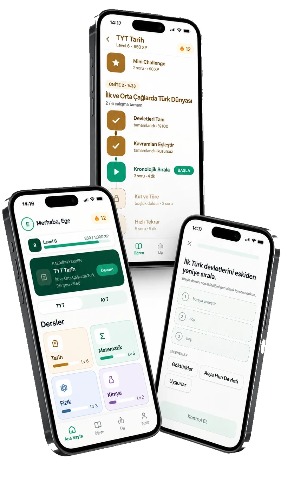
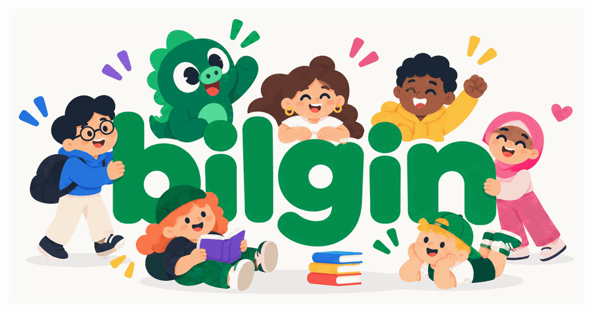

XP ve seviyeler
Her dersin seviyesi ayrı gelişir; genel profil seviyen de ilerler.
Her adım bir kazanımGünde 10–15 dakikalık kısa egzersizlerle çalış. Öğrenme yolunda ilerle, XP (deneyim puanı) kazan, serini büyüt.
iOS ve Android için yakında.

bilgin’de seni neler bekliyor? Lansmanda bu beş sınav grubu için çalışabileceksin.
Hazırlandığın sınavdan dersine ve ünitene geç.
Kolaydan sınav provasına, altı zorluk aşamasını takip et.
Ders seviyelerini ve genel profil seviyeni yükselt.
Haftalık ligde üst sıralara ilerle.
Her ünitede 6 zorluk aşaması
Bu kısa web demosu çalışma hissini tanıtır. Sonucun kaydedilmez; uygulama hesabına XP veya seri eklenmez.
Seçenekler: 5, 7, 9
Doğru yanıt: 7. x yerine 2 yazılır: 2 × 2 + 3 = 7.
Diğer sınav örneklerini etkileşimli denemek için JavaScript’i etkinleştirebilirsin.
Her türden bir örneği çözerek kendi çalışma ritmini keşfet.
bilgin’de seni bekleyen oyunlaştırma mekanikleriyle tanış.
Her dersin seviyesi ayrı gelişir; genel profil seviyen de ilerler.
Her adım bir kazanımHer yanlışta bir can azalır. Bekleyerek veya reklam izleyerek yenile; Premium ile sınırsız can kullan.
Yenilen, devam etÇalışma alışkanlığını sürdür; seri dondurma ile serini koru.
Bir gün daha!Bronz’dan Elmas’a ilerle. Üst 5 terfi eder, alt 5 bir alt kademeye düşer.
Hedefin bir üst ligBaşarılarını rozetlerle görünür kıl.
Emeklerin görünür olsunbilgin henüz yayında değil. iOS ve Android için hazırlanıyor; kesin yayın tarihi henüz paylaşılmadı.
Lansman kapsamında YKS (TYT ve AYT), LGS, KPSS, ALES ve YDS/YÖKDİL için dersler yer alacak.
Evet. Free modeli reklamlı ve 5 canla kullanılabilecek. Premium, reklamsız kullanım ve sınırsız can sunacak.
Her yanlış cevapta 5 canından biri azalacak. Canlarının yenilenmesini bekleyebilecek veya reklam izleyerek can kazanabileceksin. Premium’da can sınırlaması olmayacak.
10–15 dakika, düzenli çalışma alışkanlığı kurmak için önerilen kısa bir çalışma süresidir. Sınava hazırlık ihtiyacın hedeflerine ve mevcut bilgine göre değişir; bilgin tek başına başarı veya belirli bir sonuç garantisi vermez.
Burada her sınav grubu için başlangıç düzeyinde bir çoktan seçmeli örnek bulunur. Demo sonuçları kaydedilmez; XP, can, seri ve lig sistemleri bu sayfada çalışmaz. Uygulamada altı aşamalı öğrenme yolu ve farklı egzersiz tipleri yer alacak.
Günde 10–15 dakikayı öğrenmeye ayır.
Düzenli çalışma yolculuğun küçük bir adımla başlasın.
iOS ve Android için yakında.
